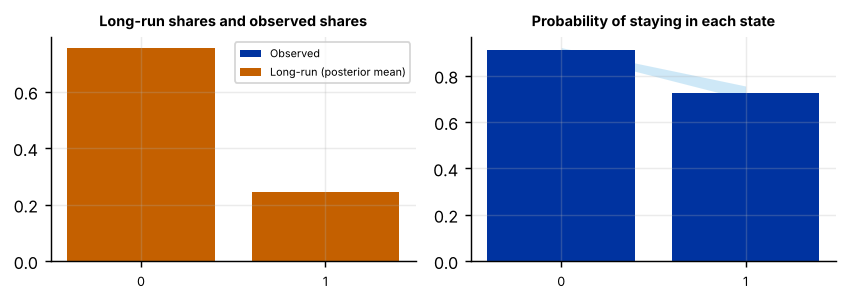

Run this model on your own data in Open Econometric Systems →
Step 1The question and the model
Where do people go next, and where do they end up? A Markov chain says that the state tomorrow depends on the state today and not on the earlier history:
From the counts \(n_{ij}\) of moves from \(i\) to \(j\) the maximum-likelihood estimate is \(\hat p_{ij} = n_{ij}/n_{i\cdot}\). The Bayesian version puts a Dirichlet prior on each row, \(p_{i\cdot} \sim \text{Dirichlet}(\alpha, \dots, \alpha)\), so that the posterior is Dirichlet\((\alpha + n_{i1}, \dots, \alpha + n_{iK})\) and can be sampled directly. For each draw of the matrix the engine computes the quantities you care about:
| Quantity | Definition |
|---|---|
| Long-run share | The stationary distribution \(\pi\) with \(\pi P = \pi\) |
| Duration | \(1/(1-p_{ii})\), the expected length of a spell in state \(i\) |
| First-passage time | The expected number of periods to reach state \(j\) from state \(i\) |
| Mobility | Shorrocks index \((K - \operatorname{tr}P)/(K-1)\): 0 means nobody moves, 1 means no persistence |
Two tests check the assumptions: independence (is the first-order chain better than a chain with no memory at all?) and time homogeneity (are the probabilities the same in the first and the second half of the sample?). When there is a unit column the moves are counted within each unit in time order, and no move is counted across two units.
How to write it: the model
We model union membership as a first-order Markov chain on two states. The transition counts are taken within each worker across consecutive years. Each row of the transition matrix has a Dirichlet(1, 1) prior, and the posterior is sampled with 4,000 draws. For each draw we compute the stationary distribution, the expected durations, the mean first-passage times and Shorrocks' mobility index, and report posterior means and 95% intervals. We test the Markov property against independence and the stability of the matrix over time with likelihood-ratio tests.
Step 2Load the data
import numpy as np
import pandas as pd
import oes_engine as oes # pip install -e open-econometric-systems/oes-engine
data = open("wagepan_union.csv").read()
d = pd.read_csv("wagepan_union.csv")
print(d.shape, "observations;", d.nr.nunique(), "men,", d.year.min(), "to", d.year.max())
print("union share by year:")
print(d.groupby("year").union.mean().round(3).to_string())(4360, 11) observations; 545 men, 1980 to 1987 union share by year: year 1980 0.251 1981 0.250 1982 0.257 1983 0.246 1984 0.251 1985 0.224 1986 0.211 1987 0.262
How to read it
The panel has 545 men observed in eight years, 4,360 observations and so 3,815 transitions, since the first year of each worker has no earlier state. The share of union members is about 25% in every year, between 21% and 26%. A stable share can hide a lot of movement, or none: the transition matrix says which.
Step 3Estimate the transition matrix
spec = dict(state="union", id="nr", time="year")
r = oes.run("bayes_mc", data, spec)
oes.summary(r)
oes.show(r, "Transition probabilities")Transitions: 3815
States: 2
Shorrocks mobility: 0.362
Mixing time (1/(1-2nd eigenvalue)): 2.76
Transition probabilities (row = from, column = to)
To Count ML Posterior mean Posterior s.d. 2.5% 97.5%
From
0 0 2637 0.9112 0.9108 0.0054 0.9003 0.9211
0 1 257 0.0888 0.0892 0.0054 0.0789 0.0997
1 0 251 0.2725 0.2732 0.0146 0.2446 0.3027
1 1 670 0.7275 0.7268 0.0146 0.6973 0.7554
Note: Dirichlet(1) prior on each row; 4000 posterior draws; 3815 transitions.How to read it
Of the 2,894 transitions that start from non-membership, 2,637 end in non-membership: the probability of staying out is 0.911 (95% interval 0.900 to 0.921) and the probability of joining in a year is 0.089 (0.079 to 0.100). Of the 921 transitions that start from membership, 670 stay: the probability of staying in is 0.727 (0.697 to 0.755) and of leaving 0.273 (0.245 to 0.303). Membership is much less sticky than non-membership, and the posterior means are almost the same as the frequencies because the counts are large and the prior is worth two observations per row.
Step 4Long-run shares and durations
oes.show(r, "Stationary distribution")
oes.plot(r)Stationary distribution (long-run shares) and persistence
Observed share Long-run share 2.5% 97.5% Stay probability Expected duration Dur. 2.5% Dur. 97.5%
State
0 0.756 0.7538 0.7240 0.7827 0.9108 11.2579 10.0253 12.6727
1 0.244 0.2462 0.2173 0.2760 0.7268 3.6701 3.3036 4.0889
Note: Duration = 1 / (1 - stay probability), in periods.
How to read it
If these probabilities held for ever, the share of members would settle at 24.6% (95% interval 21.7% to 27.6%), close to the observed 24.4%, so the sample is at its long-run balance. A non-member stays out for 11.3 years on average (10.0 to 12.7), a member stays in for 3.7 years (3.3 to 4.1). The chart compares the observed shares with the long-run shares.
Step 5First-passage times and mobility
oes.show(r, "Mean first-passage times")
oes.show(r, "Mobility")Mean first-passage times (periods to reach the column state, from the row state)
0 1
From \ To
0 1.33 (1.3-1.4) 11.23 (10.0-12.7)
1 3.66 (3.3-4.1) 4.07 (3.6-4.6)
Note: Posterior median and 95% interval. The diagonal is the mean recurrence time.
Mobility
ML Posterior mean 2.5% 97.5%
Index
Shorrocks (K - trace P)/(K - 1) 0.3613 0.3624 0.3323 0.3931How to read it
A non-member takes on average 11.2 years to join (10.0 to 12.7): the same as the duration, because there are only two states. A member takes 3.7 years to leave (3.3 to 4.1). The diagonal gives the mean recurrence time of each state: 1.33 years for non-membership (the state is occupied three years in four) and 4.07 for membership. The Shorrocks index is 0.36 (0.33 to 0.39): on a scale from 0 (nobody moves) to 1 (no persistence) that is moderate mobility.
Step 6Test the assumptions
oes.show(r, "Specification tests")Specification tests
LR statistic df p-value
Test
Independence (zero-order) against first-order Markov 1416.8390 1 0.0000
Time homogeneity: first against second half of the periods 11.2631 2 0.0036How to read it
The first test compares the chain with a model in which the state is drawn independently each year with the observed shares. The likelihood-ratio statistic is 1,417 with 1 degree of freedom: where you were last year is overwhelmingly informative about where you are now. The second test compares the first four transition years with the last three: the statistic is 11.3 with 2 degrees of freedom (p = 0.004), so the matrix is not perfectly stable over the period; the 1980s unions were losing ground. The change is small next to the persistence, but if the period were longer you would estimate the matrix separately for sub-periods.
Step 7Cut a continuous variable into states
A wage is not a state, but cutting it into terciles makes it one.
rw = oes.run("bayes_mc", data, dict(state="lwage", id="nr", time="year", bins=3))
oes.show(rw, "Transition probabilities")
oes.show(rw, "Stationary distribution")
oes.show(rw, "Mean first-passage times")
oes.show(rw, "Specification tests")Transition probabilities (row = from, column = to)
To Count ML Posterior mean Posterior s.d. 2.5% 97.5%
From
S1 [-3.58, 1.47] S1 [-3.58, 1.47] 923 0.6832 0.6823 0.0126 0.6578 0.7070
S1 [-3.58, 1.47] S2 [1.47, 1.88] 360 0.2665 0.2666 0.0120 0.2431 0.2902
S1 [-3.58, 1.47] S3 [1.88, 4.05] 68 0.0503 0.0511 0.0059 0.0401 0.0634
S2 [1.47, 1.88] S1 [-3.58, 1.47] 197 0.1531 0.1534 0.0101 0.1342 0.1735
S2 [1.47, 1.88] S2 [1.47, 1.88] 786 0.6107 0.6104 0.0137 0.5835 0.6369
S2 [1.47, 1.88] S3 [1.88, 4.05] 304 0.2362 0.2362 0.0119 0.2135 0.2607
S3 [1.88, 4.05] S1 [-3.58, 1.47] 44 0.0374 0.0381 0.0056 0.0281 0.0499
S3 [1.88, 4.05] S2 [1.47, 1.88] 143 0.1215 0.1221 0.0094 0.1037 0.1409
S3 [1.88, 4.05] S3 [1.88, 4.05] 990 0.8411 0.8398 0.0106 0.8179 0.8602
Note: Dirichlet(1) prior on each row; 4000 posterior draws; 3815 transitions.
Stationary distribution (long-run shares) and persistence
Observed share Long-run share 2.5% 97.5% Stay probability Expected duration Dur. 2.5% Dur. 97.5%
State
S1 [-3.58, 1.47] 0.3333 0.2029 0.1775 0.2298 0.6823 3.1527 2.9222 3.4126
S2 [1.47, 1.88] 0.3333 0.2957 0.2696 0.3218 0.6104 2.5699 2.4008 2.7539
S3 [1.88, 4.05] 0.3335 0.5014 0.4612 0.5420 0.8398 6.2708 5.4916 7.1513
Note: Duration = 1 / (1 - stay probability), in periods.
Mean first-passage times (periods to reach the column state, from the row state)
S1 [-3.58, 1.47] S2 [1.47, 1.88] S3 [1.88, 4.05]
From \ To
S1 [-3.58, 1.47] 4.93 (4.4-5.6) 4.32 (3.9-4.7) 7.92 (7.3-8.7)
S2 [1.47, 1.88] 11.83 (10.3-13.7) 3.38 (3.1-3.7) 5.69 (5.1-6.3)
S3 [1.88, 4.05] 15.28 (13.2-17.7) 7.28 (6.5-8.3) 2.00 (1.8-2.2)
Note: Posterior median and 95% interval. The diagonal is the mean recurrence time.
Specification tests
LR statistic df p-value
Test
Independence (zero-order) against first-order Markov 2677.8620 4 0.0000e+00
Time homogeneity: first against second half of the periods 38.5785 6 1.0000e-06How to read it
The three states are the terciles of log wages in the pooled sample (the cut points are in the state names). The highest state is the stickiest: a worker in the top third stays there with probability 0.84 (0.82 to 0.86), for an expected 6.3 years, against 0.61 for the middle (2.6 years) and 0.68 for the bottom (3.2 years). Movement is mostly to the neighbouring state; going from the bottom to the top in one year has probability 0.05 and from the top to the bottom 0.04. The first-passage times are asymmetric: 7.9 years (7.3 to 8.7) from the bottom to the top but 15.3 (13.2 to 17.7) from the top to the bottom.
The long-run shares are 20%, 30% and 50%, compared with one third each in the sample: wages rise over time, so the chain drifts upward, and the homogeneity test rejects (statistic 38.6, 6 degrees of freedom, p < 0.0001). This is the warning that goes with every Markov chain on a trending variable: the long-run shares describe where the process would go if the matrix stayed the same, not a forecast. Cut the states by year, or use wage growth, if you want a stationary chain.
Step 8Robustness: the prior
rows = []
for a in (0, 1, 20, 100):
rp = oes.run("bayes_mc", data, dict(spec, prior=a))
t = rp["tables"][0]["rows"]
rows.append([a, t[1][4], t[2][4], rp["tables"][1]["rows"][1][2]])
print(pd.DataFrame(rows, columns=["prior weight per cell", "P(0->1)", "P(1->0)", "long-run union share"]).round(4).to_string(index=False)) prior weight per cell P(0->1) P(1->0) long-run union share
0 0.0889 0.2728 0.2460
1 0.0892 0.2732 0.2462
20 0.0945 0.2822 0.2510
100 0.1154 0.3133 0.2694How to read it
With no prior (the maximum-likelihood estimate) and with one observation per cell the joining probability is 0.089 and the leaving probability 0.273. A prior worth 20 observations per cell moves them to 0.094 and 0.282, and a prior worth 100 per cell, which is still small next to the 2,894 and 921 transitions, to 0.115 and 0.313. The prior matters when a state has few transitions, so report the weight you used and, for a rare state, show the results for more than one weight.
Step 9Diagnostics: do the intervals cover?
Simulate 30 chains of 300 periods with stay probabilities of 0.85 and 0.75.
P = np.array([[0.85, 0.15], [0.25, 0.75]])
rng = np.random.default_rng(0)
hit = []
for s in range(30):
st = [0]
for t in range(299):
st.append(rng.choice(2, p=P[st[-1]]))
sim = pd.DataFrame(dict(t=np.arange(300), s=st))
rs = oes.run("bayes_mc", sim.to_csv(index=False), dict(state="s", time="t", draws=1000))
tr = rs["tables"][0]["rows"]
hit.append([tr[0][6] <= P[0, 0] <= tr[0][7], tr[3][6] <= P[1, 1] <= tr[3][7]])
print("coverage of P(0->0) and P(1->1):", np.mean(hit, axis=0).round(2))coverage of P(0->0) and P(1->1): [0.9 0.97]
How to read it
The 95% intervals contain the true probability in 90% of the samples for the first state and 97% for the second (the standard error with 30 samples is about 4 points), as they should. The test suite also checks the posterior mean against the exact Dirichlet formula, the stationary distribution and first-passage times against closed-form values for a two-state chain, a three-state chain against the eigenvector solution, the tests against chains with and without memory and with a change in the matrix, and the error messages.
Step 10Write the results
How to write it: results
Union membership is persistent. A non-member joins in a given year with probability 0.089 (95% interval 0.079 to 0.100); a member leaves with probability 0.273 (0.245 to 0.303). A non-member stays out for 11.3 years on average (10.0 to 12.7) and a member stays in for 3.7 years (3.3 to 4.1). The long-run share of members implied by these probabilities is 24.6% (21.7% to 27.6%), equal to the observed share, and the Shorrocks mobility index is 0.36 (0.33 to 0.39). The likelihood-ratio test rejects independence (statistic 1,417, 1 degree of freedom) and, weakly, a constant matrix across the sample (11.3, p = 0.004). With log wages cut into terciles the top state is the most persistent (0.84) and it takes 15.3 years (13.2 to 17.7) on average to fall from the top to the bottom but 7.9 (7.3 to 8.7) to climb from the bottom to the top; because wages trend upward the long-run shares (20%, 30%, 50%) differ from the sample shares. In simulation the 95% intervals covered the true probabilities in 90% to 97% of the samples.
| Report | What | Where |
|---|---|---|
| Model | States, prior, how the moves are counted | Step 1 |
| Transition matrix | Probabilities with intervals | Step 3 |
| Long run | Stationary distribution, durations | Step 4 |
| Mobility | First-passage times, Shorrocks index | Step 5 |
| Assumptions | Independence and homogeneity tests | Step 6 |
| Continuous variables | States from quantiles | Step 7 |
| Robustness | Prior weight | Step 8 |
| Coverage | Simulation | Step 9 |
References. Anderson and Goodman (1957), Annals of Mathematical Statistics; Billingsley (1961), Statistical Inference for Markov Processes, University of Chicago Press; Shorrocks (1978), Econometrica; Kemeny and Snell (1960), Finite Markov Chains, Van Nostrand; Geweke, Marshall and Zarkin (1986), Econometrica; Vella and Verbeek (1998), Journal of Applied Econometrics.